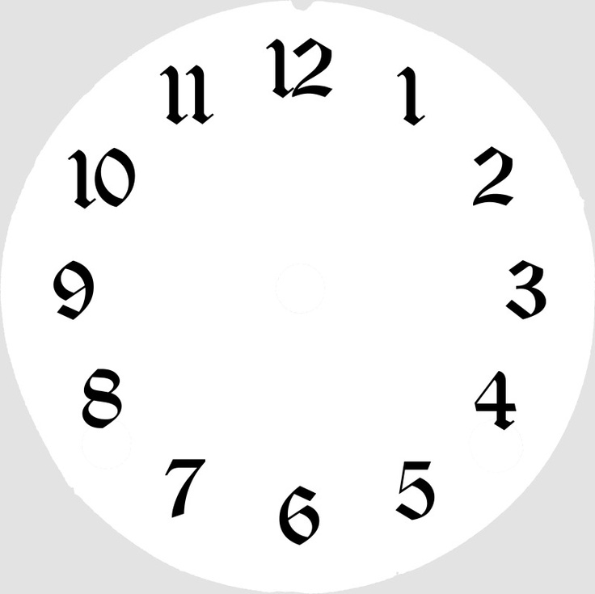

<!DOCTYPE html>
<html lang="en">
<head>
    <meta charset="UTF-8">
    <meta name="viewport" content="width=device-width, initial-scale=1.0">
    <title>Analog - Clock</title>

    <style>
        body{ 
            display: flex;
            align-items: center;
            justify-content: center; 
        }
        .container{
            width: 400px;
            height: 400px;
            border: 1px solid red; 
            display: flex;
            align-items: center;
            justify-content: center;
            background-repeat: no-repeat;
            background-position: center center;
            background-image: url("clk.jpg");
            transform-origin: bottom;
        }
        img{
            border: 1px solid red; 
        }

        .hand{
            position: absolute;
            /* background-color: black; */
            margin: auto;
            left: 0;
            right: 0;
            border-radius: 5px;
            transform-origin: bottom;
        }
        .hour{
            margin-bottom: 95px;
            width: 3px;
            height: 100px;
            background-color: red;
        }
        .min{
            margin-bottom: 114px;
            width: 2px;
            height: 120px;
            background-color: green;
        }
        .sec{
            margin-bottom: 132px;
            width: 1px;
            height: 140px;
            background-color: orangered;
        }
    </style>
</head>
<body>
    <div class="container"> 
        <div class="hour hand"></div>
        <div class="min hand"></div>
        <div class="sec hand"></div>
        <!--  -->
    </div>

    <script>
        const hr = document.querySelector('.hour')
        const min = document.querySelector('.min')
        const sec = document.querySelector('.sec')

        setInterval(() => {
            let now = new Date()
            let hours = now.getHours()
            let minutes = now.getMinutes()
            let seconds = now.getSeconds()
            // console.log(hours);
            // console.log(minutes);
            // console.log(seconds);

            let clkHrs = ((hours*30) - (minutes/2)) 
            let clkMint = ((minutes*6) - (seconds/10))
            let clkSec = (seconds*6)
            hr.style.transform = `rotate(${clkHrs}deg)`
            min.style.transform = `rotate(${clkMint}deg)`
            sec.style.transform = `rotate(${clkSec}deg)`
        }, 1000);
    </script>
</body>
</html>